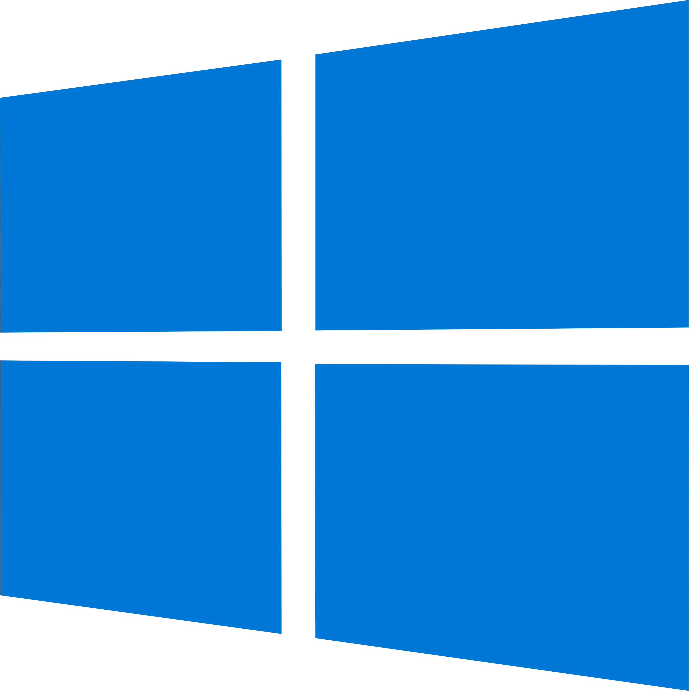

<html>
<style>
  html {
    background: #111422;
    overflow: hidden;
  }

  .ball {
    width: 80px;
    height: 80px;
    background: transparent;
  }

  img {
    width: 100%;
  }
  .logo{
    width: 64px;
    height: 64px;
    position: absolute;
    top: 50%;
    left: 50%;
    transform: translate(-50%,-50%);
  }
  .p{
    position: absolute;
    top: 50%;
    left: 50%;
    transform: translate(-50%,-50%);
    color: #fff; font-family: monospace; padding: 20px;
  }
</style>
<div class="ball">
  
</div>
<script>
  var pos_y = 0;
  var pos_x = 0;
  var dir_y = 1;
  var dir_x = 1;
  var speed = 5;
  var call = 0;
  var max_y_screen = (window.innerHeight - 115);
  var max_x_screen = (window.innerWidth - 115);
  var ball = document.getElementsByClassName("ball")[0];
  var sec = 5;
  var sc = 0;
  var render = true;
  var t = setTimeout(function () {
     render = false;
    document.body.style.background = "#000";
    var a = setInterval(function () {
      sec--;
      if(sec < 0){
        
        sc++;
        if(sc > 10){
          document.body.innerHTML = ` <p class="p" style=""> а с Windows 10 такого не будет :D</p>">
        `;
        clearInterval(a);
        clearTimeout(t);
        sc = 10;
        }else{
          document.body.innerHTML = `
        `;
        }
        sec = 0;
        
      }else{
         document.body.innerHTML = `
            <div style="color: #fff; font-family: monospace; padding: 20px; line-height: 1.2;">
                <p>[    0.000000] Linux version 6.1.0-arch1-1 (gcc version 12.2.0)</p>
               
                <p>[    0.000435] Kernel panic - not syncing: Attempted to kill init! exitcode=0x0000000b</p>
                <p>[    0.000438] CPU: 0 PID: 1 Comm: init Not tainted 6.1.0-arch1-1 #1</p>
                <p>[    0.000440] Hardware name: PC Specialist Ltd Defiance IV/P65_67HSP, BIOS 1.05.10 03/27/2018</p>
                <p>[    0.000442] Call Trace:</p>
                <p>[    0.000444]  &lt;TASK&gt;</p>
                <p>[    0.000446]  dump_stack_lvl+0x44/0x5c</p>
                <p>[    0.000450]  panic+0x118/0x2b4</p>
                <p>[    0.000452]  reboot to ${sec} seconds..</p>
            </div>`;
      }
     
    }, 1000);
    return; // Останавливаем анимацию

  }, 5000);
  function draw() {
    if(render){
      pos_y += speed * dir_y;
    pos_x += speed * dir_x;
    max_y_screen = (window.innerHeight - 80);
    max_x_screen = (window.innerWidth - 80);
    if (pos_y >= max_y_screen || pos_y <= 0) dir_y *= -1;
    if (pos_x >= max_x_screen || pos_x <= 0) dir_x *= -1;
    call++;
    if (call > 100) {
      speed += 1;
      call = 0;
    }

    ball.style.transform = "translate(" + pos_x + "px," + pos_y + "px)";
    requestAnimationFrame(draw);
    }
  }
  draw();
</script>

</html>